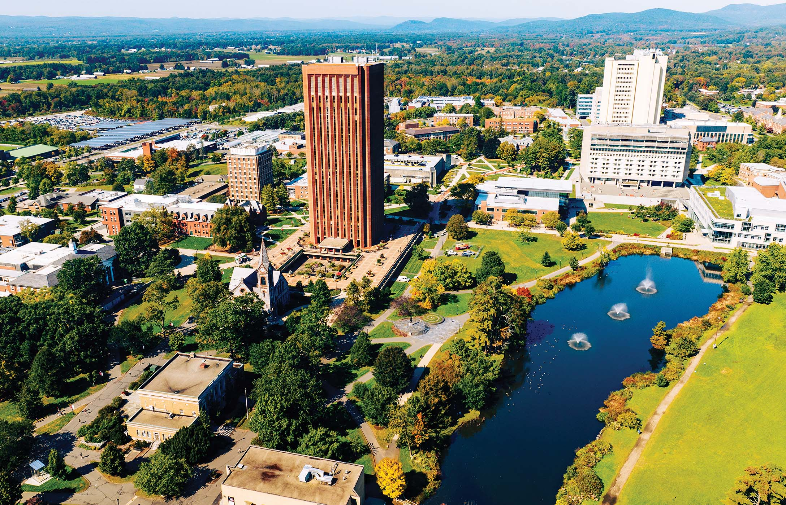

Hi There,
I'm Rafik Khodr
i am into
About Me.jpg)
I am a senior at Boston University studying Statistics and Computer Science, based in Boston, Massachusetts. I work on reliable AI for healthcare and biology: at the Kolachalama Laboratory I build statistical and machine learning models that harmonize neurodegenerative-disease data across cohorts and assay platforms, and at the H2X Laboratory I help train motion-detection models for quadruped robots. Alongside my research, I have interned in software engineering and AI product roles, and I enjoy building full-stack applications. I care most about keeping technical work close to the people it helps.
email : kjkrafik@gmail.com
place : Boston, Massachusetts - 02215
Education is not the learning of facts, but the training of the mind to think.
Cumulative GPA: 3.89
Relevant Coursework: Data Structures, Algorithms, Computer Systems, Database Systems, Introduction to Artificial Intelligence, Statistical Analysis, and graduate-level Linear Models and Probability
Spring 2027: graduate-level Computational Statistics and Generalized Linear Models, and Distributed Systems

Cumulative GPA: 4.0
Relevant Coursework: Object-Oriented Programming, Linear Algebra, Multivariate Calculus
Sep 2026 - Present
I work on multimodal AI for neurodegenerative diseases such as Alzheimer's, Parkinson's, and ALS. Because data from different cohorts rarely lines up, I build statistical and machine learning models, including PyTorch autoencoders, that harmonize data across cohorts and assay platforms into a shared representation, and I run analyses testing whether it preserves clinically meaningful information such as diagnosis. I contributed to a manuscript on harmonizing proteomic data across Olink, mass spectrometry, and SomaScan platforms (under review at Briefings in Bioinformatics) and am a co-author on a second manuscript, in preparation for Nature Neuroscience, that uses AI to identify and bench-validate therapeutic targets for ALS. I also review new molecular foundation models for their application to ALS and present papers and results to PhD, MD, and master's researchers.
Sep 2026 - Present
Under Professor Ohn Bar, I help annotate and curate motion data and train and evaluate motion-detection models for quadruped robots. The lab develops intelligent technologies that act autonomously and assist people in real time, drawing on machine intelligence, computer vision, and human-machine interaction.
May 2026 - Aug 2026
On the Cloud Enablement team, I architected reusable Azure infrastructure templates using ARM templates that standardized cloud resource provisioning for more than 50 internal teams, with cross-platform exposure to AWS cloud services. I also joined AI initiative workshops and knowledge-transfer sessions with a technology architect on knowledge graphs and evidence-based chunking strategies for LLM applications, and delivered work within Agile sprints from design through production rollout.
June 2026 - Present
I design and evaluate software engineering tasks for AI model training, reviewing model-generated code and system designs for correctness, maintainability, and clarity, and identifying flawed logic and incomplete implementations.
Aug 2025 - Dec 2025
During my most recent Co-op last Fall, I was in charge of leading a migration on my team's data pipelines from Azure Data Factory to Databricks Workflows. It involved redesigning orchestration logic and introducing API-driven, event-based automation to improve pipeline reliability and efficiency. Additionally, I collaborated closely with engineers and architects in an Agile environment, participating in story refinement, documenting migration and design decisions, and supporting the iterative development of Databricks workflow integrations. Throughout my time there, I migrated over 20 data pipelines successfully which benefitted over 1,400 Kroger partners, as well as millions of consumer households across the country.
May 2025 - Aug 2025
At Cruise AI, a healthcare-focused AI startup, I worked on Scribe AI, an intelligent assistant designed to record doctor–patient conversations and automatically generate transcripts, prescriptions, diagnoses, and clinical documentation. My primary contributions involved product testing and prompt engineering to refine large language model behavior, ensuring accuracy, reliability, and regulatory compliance in medical outputs. By iteratively evaluating edge cases and fine-tuning prompts, I helped improve transcription fidelity and reduced error rates in generated clinical notes, enhancing both physician efficiency and patient care outcomes.
April 2024 - Sep 2024
As a Software Engineer Intern at UNIPHI, I engineered and optimized proprietary software systems to streamline clinical trial research workflows, resulting in a 15% acceleration of testing timelines. Working closely with the Chief Technology and Operating Officer, I contributed to key technology and operations management initiatives that impacted over 5 active projects. Additionally, I conducted data and statistical analyses on clinical datasets, uncovering actionable insights that informed strategy and supported data-driven decision-making.
Feb 2022 - Aug 2023
In my role as Program Manager at FMG Robotics, I designed and delivered weekly STEM classes to over 1,000 students, fostering early interest in science and engineering. Through mentorship in computer science, robotics, and analytical problem-solving, I helped accelerate students’ technical development with hands-on projects. Additionally, I led promotional efforts at the Northeastern STEM Fair, significantly boosting the organization’s visibility and contributing to a 20% increase in community engagement.